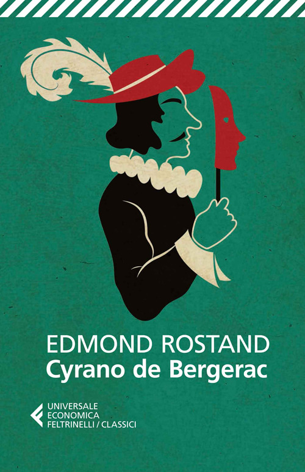

4:24 · 1 OPERA
Monologo del “No, grazie!” dal Cyrano de Bergerac.
Il filo del discorso
Una premessa sulla perdita dell’indipendenza individuale introduce il monologo del No, grazie dal Cyrano de Bergerac di Edmond Rostand. La lettura rifiuta protezioni, adulazione, favori e ricerca del prestigio attraverso le cerchie del potere. Nell’ultima parte il personaggio oppone a quei compromessi la libertà di creare, lavorare e riconoscere come propri i risultati ottenuti.
I libri nel discorso

Cyrano de Bergerac
Copertina: Feltrinelli, Universale Economica I Classici, 2014
Edizione italiana tradotta da Cinzia Bigliosi. Nessuna edizione attribuita al video.
Nel segmento 45,71–63,62 il lettore annuncia il monologo del No, grazie, indica l’opera e pronuncia foneticamente il nome di Rostand; segue la lettura.
Passaggio 0:53 ↗ · Fonti e libro ↗